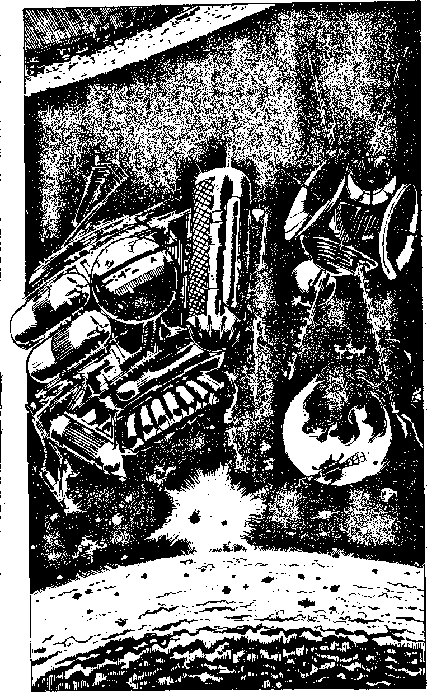

325
Nearest you, on the radar, is what can only be a weather control satellite - it has seeding pods and chemical condenser beams to generate clouds and rainfall. CAIN tells you that Mechanon, before the arrival of the Danikoi, was ravaged by terrible ion storms and hurricane-force winds. But the weather control satellites prevent these.
As you approach the weather satellite CAIN chimes again: 'Look at the radar. Falcon.' There is an intruder detection satellite beyond the weather controller. It has already detected the Strike Fighter's ion drive and beamed a message to the Central Computer on Mechanon. Your twin fission tubes are ready to fire. Will you turn them against:
| The intruder detection satellite? | Turn to 336 |
| The weather control satellite? | Turn to 344 |